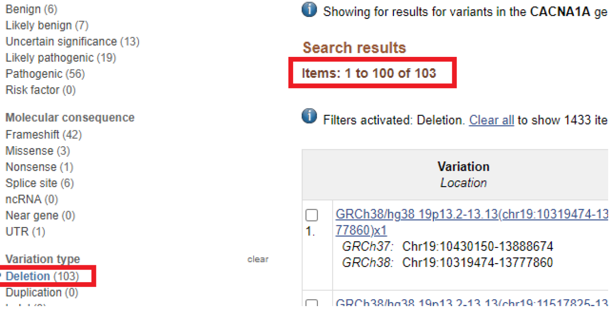
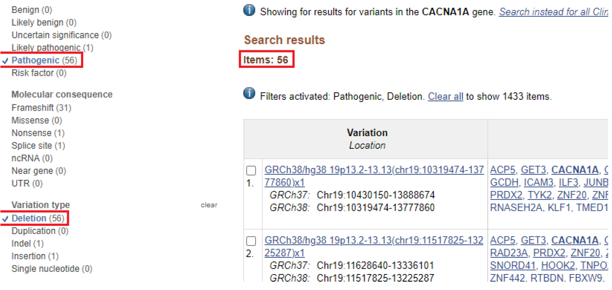
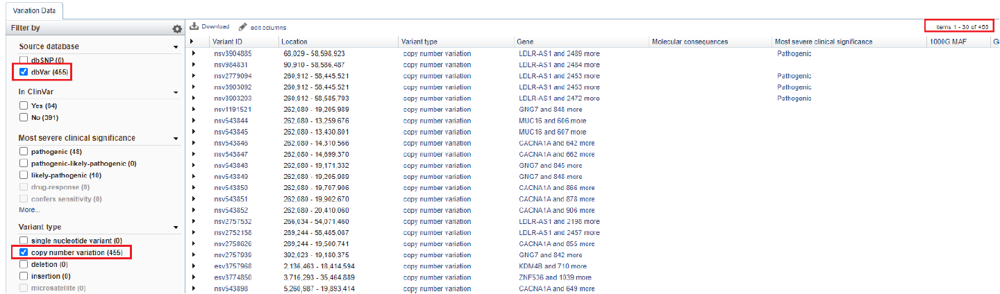

Single Nucleotide Polymorphism (SNP)
The genome, as
well as specific sequences, of one organism is not exactly the same as
the other. Generally, there is a consensus to what nucleotides should be in which
positions, which is based upon population genetics, that does produce a
reference genome for the organism. However, mutations do naturally occur and
this leads to variation in genomes of one organism to the next. These mutations
are polymorphisms in DNA sequences, which are determined as such when the
possible sequence variation is present in at least 1% of the population.
Single-point mutation are referred to as single nucleotide polymorphism (SNP)
whereas any mutations beyond a single point is multiple nucleotide polymorphisms (MNP). MNPs that are a result of genomic duplications are called copy number
variation (CNV). These mutations may be nonfunctional and silent by hiding
in the genomic sequence, or they may have detrimental consequences. Some functional
consequences of variants, especially SNPs, include changes to the amino acid
sequence, changes in the coding area that affect splicing, changes promoters/regulatory
regions that affect gene expression, changes that cause genetic disease, and changes
that increase medical risk or differential drug response.
SNPs can be divided into two broad categories based on its location and consequence: either protein-coding or not protein-coding. Protein-coding SNPs can be synonymous, where the SNP in the coding region does not change the amino acid sequence. This is due to the fact that codons are composed of triplet nucleotides and there are multiple codon combinations that can code for the same amino acid. Protein-coding SNPs can also be nonsynonymous, where the SNP in the coding region changes the amino acid sequence. Lastly, SNPs not in the coding region are broadly categorized as noncoding SNPs, which may compose of SNPs within introns and the UTRs. While noncoding SNPs are not seen, they can have prominent effects on the protein product by altering gene expression or gene regulation.
Practice Time!
Please watch these
two tutorials (tutorial
1 and tutorial 2) on how to use
the Galaxy server’s tools to find SNPs using the dbSNP database. Note that as bioinformatic
tools are improved upon, the video may be slightly outdated in the version
numbers used. As an added bonus, click here for a step-by-step process on how to view SNP data with the genome browser IGV.
Since genome browsers are covered in a separate section, this may help connect
the dots. Note that the guide is based on the human hg18 assembly, which is not
the most up-to-date anymore.
Variant Resources
Some database
resources for variants include dbSNP, SNPeffect, SNPedia, 1000 Genomes
Browser, and ClinVar. The
database dbSNP, hosted by NCBI, is the largest database of SNPs that include a
primary database of submissions and a curated database of reference SNPs. In
addition to information on SNPs, it includes MNPs and short indels (insertion
or deletions). The SNPeffect database focuses on the effect of SNPs with their
proteins. It includes tools for protein folding and stability, with a predictor
for chaperone effects. The SNPedia database is a Wikipedia-based collection
of publications on known SNPs and their clinical significances. The 1000
Genomes Browser is a browser portal to the data collected from the 1000 Genomes
Project, which launched an extensive study in 2010 that utilized
sequence data from individuals in various geographical areas to find over
12,000 SNPs that included novel and/or rare SNPs that had an allele frequency of
less than 1% in the population. The ClinVar database is a curated database only
for human variations that have possible medical or clinical significance. The
database contains information from dbSNP, but should not replace dbSNP as a
resource. As ClinVar is directed towards medically-related research on variants,
the search functions allow the use of tags to query terms based on categories,
such as disease ([dis]) or genes ([gene]). Additional filters based on categories
applied on the variant’s records can be utilized on queried results to narrow
down the search.
The extent of ClinVar’s ability as a database and connectivity with external resources is too broad to write here. Simultaneously, reading does not help the student learn everything. The best option is by performing- so let’s practice!
Practice Time!
Find
the human CACNA1A gene in NCBI ClinVar. Filter to limit results to Variation
type: Deletion. How many total variations are listed after filtering? Your
results should look similar to the top figure. Now, apply the filter for Pathogenic.
How many variants from are pathogenic? Your results should look similar to the
bottom figure. Note that as the database grows and more information is added,
the total number will be changed!


Copy Number Variation (CNV)
As previously mentioned, mutations can include duplications of genomic regions, resulting in CNVs. Individuals within a population can vary in the number of times the genomic region of the variation is present in their genome. CNVs have been found in the genomes of humans, flies, mice, monkey, and chimpanzees. CNVs were first found in 2004 by Sebat et al. with a more comprehensive study done in 2007 by Wong et al. that showed CNVs overlapping with genes and miRNA. Many of the overlapped genes were sensory-related, suggesting that CNVs may contribute to differences in taste or smell between populations. The genesis of CNVs is still elusive, but studies were performed to investigate their origin. A study by Hastings et al. suggested the microhomology-mediated break induced replication (MMBIR) model for explaining the formation of new CNVs based on sequence and models for DNA repair. Further studies found CNV variation in inbred mice, which suggesting spontaneous development. Links to genetic disorder have been found to be associated with some CNVs. A study by Bruder et al. found that identical twins have differences in CNV.
As new research
is being performed on CNVs, the databases related to CNVs are flooded with new
information. Some databases may not have the up-to-date information depending
on how well it is maintained. TheDatabase of Genomic Variants (DGV) database contains a genome
browser that shows CNV gains in blue and CNV losses in red in datasets, which
is also available as the UCSC Genome Browser track DGV Struct Var. The Database
of Chromosomal Imbalance and Phenotype in Humans using Ensembl Resources (DECIPHER) database is built on patient
data, obtained with consent. Lastly, the dbVar database from NCBI uses
data from various databases, including DGV. Another database resource includes
the Broad Institute’s The Cancer Genome Analysis (TCGA) group that hosts the
analysis structure Firehose.
Firehose contains data from different forms of cancer and, within each cancer
type, has a CNV option to view a patient’s data with relation to loss of CNV (blue)
or gain of CNV (red). It also includes a CNV summary track that shows a general
summary of results between a red and blue split. The NCBI Variation Viewer contains
data from NCBI’s dbSNP and dbVar databases in the form of tracks. Lastly, the GnomAD database contains a searchable
browser to show peaks for the quantity of protein-coding SNPs found in a gene
region with CNV data underneath the peaks that are color coded for gain (brown)
and loss (red) of CNV.
Other resources
available for CNV include Bioconductor packages for use with R. The
cn.MOPSpackage analyzes next-generation sequencing data to find CNVs in
individuals. This package was described by Klambauer et al. in addition to using two methods to detect CNVs: read count detection and
reference-based approach. The
CNVtools package looks for genetic associations in cases versus controls.
Practice Time!
Find
the CACNA1A gene in the NCBI Variation Viewer. Filter for dbVar and CNV. How
many total CNVs? Your results should look similar to the figure below. Note
that as the database grows and more information is added, the total number will
be changed!

This webpage was produced by Brian Poon as the Final Porfolio for class AS.410.610.82,
Bioinformatics: Tools for Genome Analysis, at Johns Hopkins University.